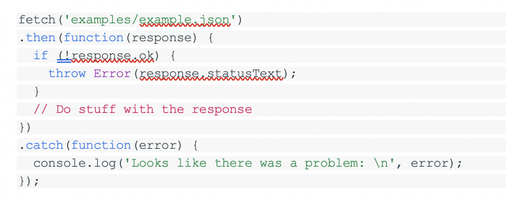

The Fetch API provides an interface for fetching resources (including across the network)
The fetch specification differs from jQuery.ajax() in two main ways:
- The Promise returned from fetch() won’t reject on HTTP error status even if the response is an HTTP 404 or 500. Instead, it will resolve normally (with ok status set to false), and it will only reject on network failure or if anything prevented the request from completing.
- By default, fetch won't send or receive any cookies from the server, resulting in unauthenticated requests if the site relies on maintaining a user session (to send cookies, the credentials init option must be set).
Since Aug 25, 2017. The spec changed the default credentials policy to same-origin. Firefox changed since 61.0b13.
Example
